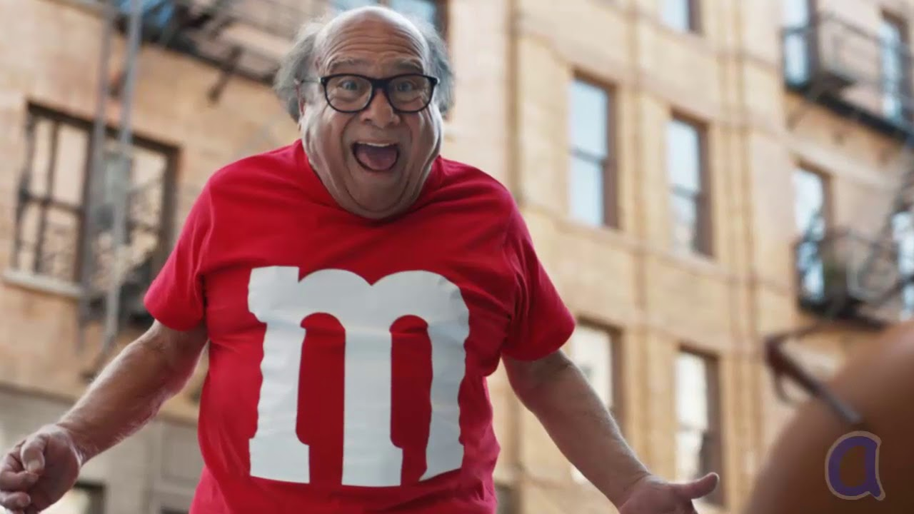
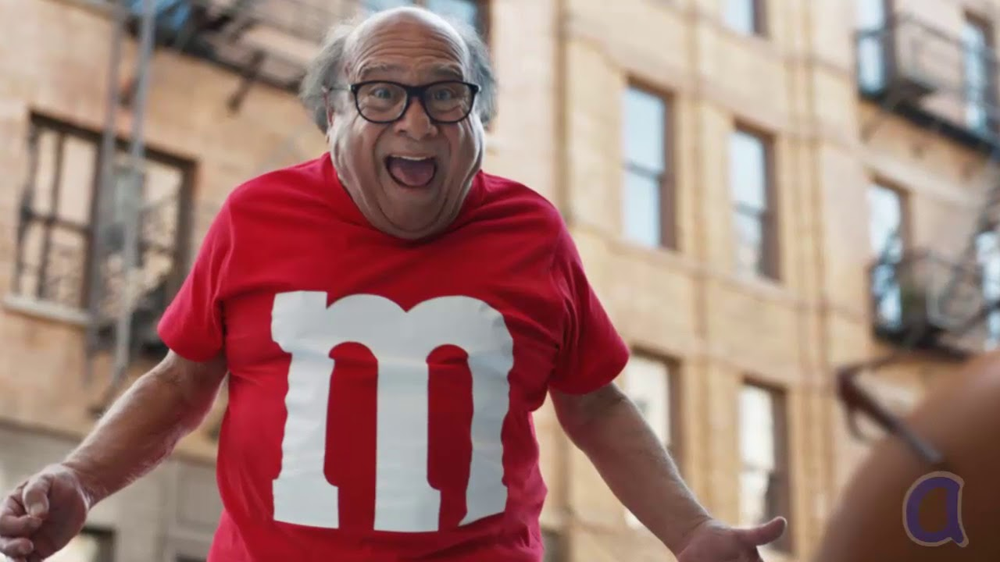
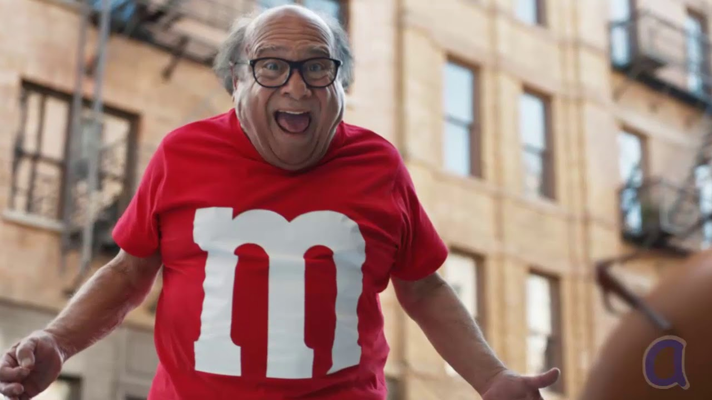
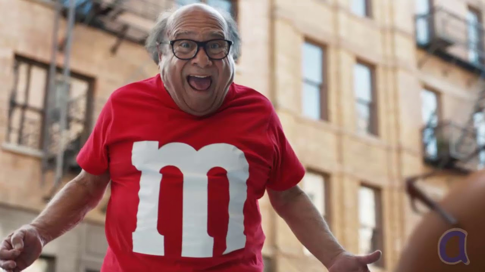

Home
Danny Devito is the best, and should be appreciated by all!
 


Danny Devito, born in 1944, is now 74 years old. He began his journey of fame from his role of Martini in One Flew Over the Cuckoo's Nest (1975) as well as his part in the television series, Taxi. Devito has been very successful over his years and years of acting. He has won 12 awards out of the almost 55 times he was nominated.